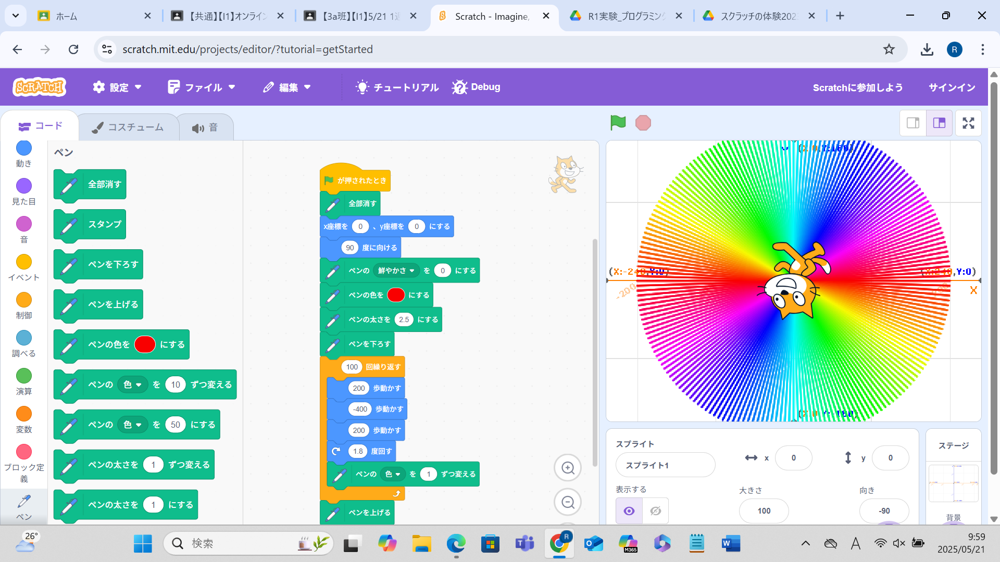
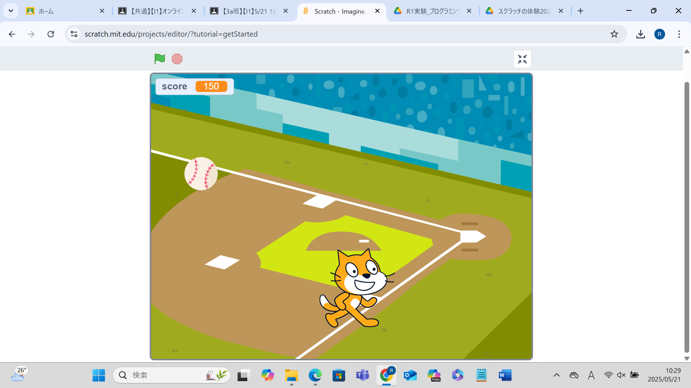

1週目のレポート ： 公大高専１年実習I-1
3a班1番 アッキー
第1週目
1-1 サイエンスアート

1.内容
ペンの太さを2.5にし、赤から始めて、色を１ずつ変えて１００回繰り返して、半径200歩の円を描いた。
2.感想
学習した内容を実践したときに自分が感じた感想を
ラインアートは太さなどを変えることができ、また、角度や繰り返す回数をかえることにより、
多種多様な図形を作図できることが分かった。
1-2 ゲーム

1.内容
学習した内容を説明する文章を
左向き矢印キーを押すと左に移動し、右向き矢印キーを押すと右に移動して、
野球ボールに触れると10ポイント入るゲームを作成した。
2.感想
ボールが同じ速度で同じ場所につかないように乱数を設定するのが大変だった。
また、触れただけで消えるぷろぐらむと表示するプログラムが必要であることが分かった。
1-3 ホームページ作成
私のホームページ
1.内容
自分の趣味と自分が所属している部活について記入した。自分の趣味は、読書とミセスの曲を聴くことである。
2.感想
ホームページを作るときのコツやホームページの作成方法の特徴を理解することができた。
また、漢字も入力することができることが分かった。
各ページへのリンク
1週目のレポート
2週目のレポート
3週目のレポート
私のホームページ